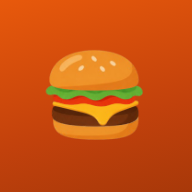

Fadori
.
—
RADIO DIVERGENTES
EN EL RECREO
Radio Divergentes
¡Ya está tu pedido!
Empezar la transmisión
Con sonido, pantalla completa y sin que se apague
Toca para el sonido
Volver a la pantalla
La pantalla de turnos